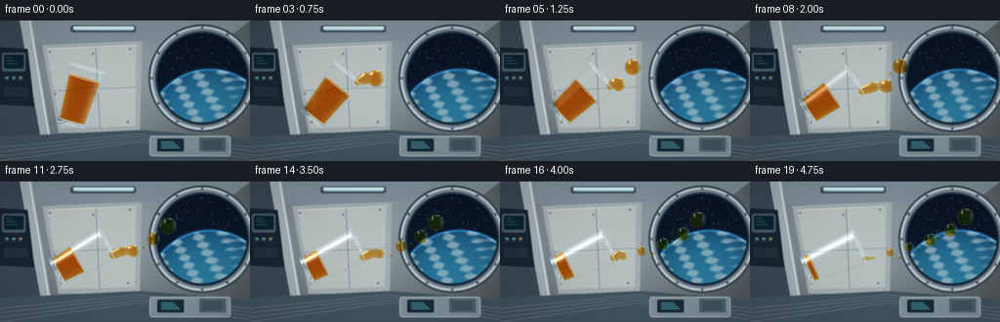
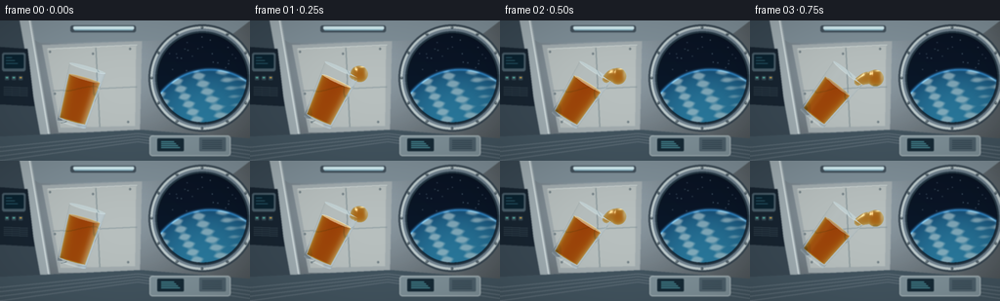

CODING AGENTS AS PIXEL WORLD MODELS
traex/GPT-6.1-Sol · mechanics_0007
点击播放 · 原生 RGB 像素
逐轮保存的候选
回放视频、检查图与代码变化。
每份候选均可单独播放。实际图片检查记录在下方工具轨迹中。
候选 01播放与检查图
点击播放 · 原生 RGB 像素


展开代码变化
--- 上一保存版本
+++ 本次保存版本
@@ -0,0 +1,248 @@
+from pathlib import Path
+import math
+import numpy as np
+from PIL import Image, ImageDraw, ImageFilter
+import artifact_io
+
+ROOT=Path(__file__).resolve().parent
+S=3; W,H=256*S,144*S
+rng=np.random.default_rng(27)
+
+def background():
+ yy,xx=np.mgrid[0:H,0:W]; x=xx/S; y=yy/S
+ base=np.zeros((H,W,3),float)
+ light=.25+.65*np.exp(-((x-113)/150)**2-((y-40)/130)**2)
+ for k,c in enumerate([133,149,159]):base[:,:,k]=c*light+22
+ base+=rng.normal(0,.7,(H,W,1))
+ im=Image.fromarray(np.uint8(np.clip(base,0,255))); d=ImageDraw.Draw(im)
+ def poly(p,fill,outline=None,width=1):d.polygon([(int(a*S),int(b*S)) for a,b in p],fill,outline);
+ def line(p,c,w=1):d.line([(int(a*S),int(b*S)) for a,b in p],fill=c,width=max(1,int(w*S)))
+ def rect(box,c,rad=0,outline=None,w=1):
+ b=tuple(int(v*S) for v in box)
+ if rad:d.rounded_rectangle(b,int(rad*S),fill=c,outline=outline,width=int(w*S))
+ else:d.rectangle(b,fill=c,outline=outline,width=int(w*S))
+ # The station hull: layered insulation panels, broad extruded ribs and practical light strips.
+ poly([(0,0),(256,0),(231,19),(41,23)],(127,143,152))
+ poly([(0,0),(20,0),(47,144),(0,144)],(57,72,83))
+ poly([(20,0),(32,0),(56,144),(46,144)],(160,173,178))
+ line([(30,0),(54,144)],(217,228,230),1.4)
+ poly([(43,25),(145,21),(143,114),(60,115)],(162,172,175))
+ poly([(48,29),(139,26),(138,108),(62,110)],(183,191,190))
+ line([(49,29),(140,25)],(219,227,224),1)
+ line([(54,72),(140,68)],(125,142,149),1.2)
+ line([(98,28),(102,109)],(127,143,148),1)
+ for a,b in [(51,32),(133,29),(63,104),(131,104),(56,75),(95,34)]:
+ d.ellipse(((a-1)*S,(b-1)*S,(a+1)*S,(b+1)*S),fill=(87,103,112))
+ line([(a-.45,b),(a+.45,b)],(205,215,213),.4)
+ poly([(0,119),(144,112),(256,121),(256,144),(0,144)],(66,84,95))
+ for shift in [0,23,46,69]:line([(0,130+shift/5),(141,116+shift/8),(256,130+shift/6)],(104,119,129),1)
+ rect((72,5,139,12),(65,80,91),2)
+ rect((75,6,137,9),(211,237,242),1)
+ rect((76,9,136,10),(137,180,195),1)
+ # Instrument stack on the shaded left wall.
+ poly([(0,27),(28,29),(35,88),(0,86)],(23,36,48))
+ rect((2,33,26,52),(72,93,105),2)
+ rect((4,35,24,49),(10,34,47),1)
+ for j in range(3):line([(6,38+j*3),(12+j*3,38+j*3)],(85,173,195),.6)
+ for j in range(3):
+ rect((5+7*j,57,9+7*j,61),(52,73,84),.7)
+ rect((6+7*j,58,8+7*j,59),(95,199,181) if j!=2 else (226,173,72))
+ for j in range(5):line([(4,68+j*2),(28,69+j*2)],(84,103,113),.8)
+ # Dark circular observation window, deep multilayer pressure seal.
+ cx,cy,r=207,59,49
+ for rr,c in [(55,(54,69,80)),(53,(190,203,205)),(50.5,(111,129,143)),(48,(37,56,69)),(46,(5,14,27))]:
+ d.ellipse(((cx-rr)*S,(cy-rr)*S,(cx+rr)*S,(cy+rr)*S),fill=c)
+ for a in np.linspace(0,2*np.pi,12,endpoint=False):
+ bx=cx+51.7*np.cos(a); by=cy+51.7*np.sin(a)
+ d.ellipse(((bx-1.2)*S,(by-1.2)*S,(bx+1.2)*S,(by+1.2)*S),fill=(55,71,81))
+ d.ellipse(((bx-.5)*S,(by-.7)*S,(bx+.3)*S,(by+.1)*S),fill=(218,226,223))
+ arr=np.array(im).astype(float)
+ win=(x-cx)**2+(y-cy)**2 < 45.4**2
+ sky=np.stack([9+0*x,18+.07*y,34+.09*y],axis=-1)
+ # Curved Earth limb with ocean, atmospheric scattering and cloud bands.
+ ex,ey,er=215,115,65
+ dist=np.sqrt((x-ex)**2+(y-ey)**2)
+ earth=dist<er
+ z=np.sqrt(np.clip(1-(dist/er)**2,0,1))
+ clouds=(np.sin(x*.15+y*.29+2*np.sin(x*.036))*np.sin(y*.42-x*.033)+.5*np.sin(x*.26-y*.13))
+ clouds=np.clip((clouds-.04)*1.2,0,1)
+ cc=np.stack([18+25*z,66+58*z,105+55*z],-1)
+ cc=cc*(1-clouds[:,:,None]*.65)+np.array([179,203,209])*clouds[:,:,None]*.65
+ rim=np.exp(-((dist-er)/1.3)**2)
+ sky=np.where(earth[:,:,None],cc,sky)+rim[:,:,None]*np.array([31,77,108])
+ arr[win]=sky[win]
+ im=Image.fromarray(np.uint8(np.clip(arr,0,255)));d=ImageDraw.Draw(im)
+ for i in range(31):
+ sx=rng.uniform(164,247);sy=rng.uniform(16,53)
+ if (sx-cx)**2+(sy-cy)**2<44**2 and (sx-ex)**2+(sy-ey)**2>er**2:
+ d.ellipse((sx*S,sy*S,sx*S+1.4,sy*S+1.4),fill=(131,159,178))
+ # Rounded equipment housings below the porthole.
+ rect((153,118,236,139),(127,145,153),3,(170,184,187))
+ rect((161,121,188,134),(22,42,54),1)
+ for j in range(4):rect((165,124+2*j,178+j*2,124.7+2*j),(80,155,166))
+ rect((204,120,231,134),(78,97,108),1)
+ for a in range(5):line([(207,123+a*2),(227,123+a*2)],(38,57,70),.7)
+ return np.array(im.filter(ImageFilter.GaussianBlur(.48*S))).astype(float)/255
+
+BG=background()
+# An orthographic macro lens keeps the small, delicate liquid surfaces legible.
+yy,xx=np.mgrid[0:H,0:W]
+PX=(xx+.5-W/2)/(W/8.9); PY=-(yy+.5-H/2)/(W/8.9)
+O=np.stack([PX,PY,np.full_like(PX,8.)],-1)
+D=np.array([0.,0.,-1.])
+
+def sphere_hits(center,radius):
+ q=O-center
+ b=-q[:,:,2]; c=(q*q).sum(-1)-radius*radius
+ disc=b*b-c; v=disc>0
+ root=np.sqrt(np.maximum(disc,0))
+ return np.where(v,-b-root,np.inf),np.where(v,-b+root,-np.inf)
+
+def cone_hits(center,axis,r0,slope,ylo,yhi):
+ q=O-center
+ qo=q@axis; da=D@axis
+ qp=q-qo[:,:,None]*axis; dp=D-da*axis
+ rad=r0+slope*qo
+ A=dp@dp-(slope*da)**2
+ B=2*(qp@dp-rad*slope*da)
+ C=(qp*qp).sum(-1)-rad*rad
+ dis=B*B-4*A*C
+ root=np.sqrt(np.maximum(dis,0))
+ t1=(-B-root)/(2*A);t2=(-B+root)/(2*A)
+ enter=np.minimum(t1,t2);exit=np.maximum(t1,t2)
+ if abs(da)>1e-8:
+ a=(ylo-qo)/da; b=(yhi-qo)/da
+ enter=np.maximum(enter,np.minimum(a,b));exit=np.minimum(exit,np.maximum(a,b))
+ else:
+ v=(qo>=ylo)&(qo<=yhi)
+ enter=np.where(v,enter,np.inf);exit=np.where(v,exit,-np.inf)
+ v=(dis>=0)&(exit>=enter)&(exit>0)
+ return np.where(v,enter,np.inf),np.where(v,exit,-np.inf)
+
+def refract_image(image,n,thickness,strength):
+ dx=n[:,:,0]*thickness*strength*W/8.9;dy=-n[:,:,1]*thickness*strength*W/8.9
+ ix=np.clip(np.round(xx+dx).astype(int),0,W-1);iy=np.clip(np.round(yy+dy).astype(int),0,H-1)
+ return image[iy,ix]
+
+def reflections(n):
+ # Large station illuminants, as reflected in polished glass and glossy fluid.
+ nz=np.maximum(n[:,:,2],0)
+ ref=np.zeros_like(n)
+ strip=np.exp(-((n[:,:,0]+.37)/.105)**2-((n[:,:,1]-.58)/.23)**2)
+ top=np.exp(-((n[:,:,0]-.25)/.28)**2-((n[:,:,1]-.84)/.10)**2)
+ blue=np.exp(-((n[:,:,0]-.75)/.22)**2-((n[:,:,1]-.2)/.6)**2)
+ pin=np.exp(-((n[:,:,0]+.42)/.07)**2-((n[:,:,1]-.48)/.07)**2)
+ ref +=strip[:,:,None]*np.array([.87,.95,1.])
+ ref +=top[:,:,None]*np.array([.58,.69,.74])
+ ref +=blue[:,:,None]*np.array([.15,.32,.49])
+ ref +=pin[:,:,None]*.5
+ return ref
+
+def render(k):
+ t=k/4
+ angle=np.deg2rad(16+51*(1-np.exp(-t/1.3)))
+ axis=np.array([np.sin(angle),np.cos(angle),.095]);axis/=np.linalg.norm(axis)
+ side=np.array([axis[1],-axis[0],0]);side/=np.linalg.norm(side)
+ center=np.array([-1.62,-.20,.48])+np.array([.025*t,.022*np.sin(t),0])
+ # Open, thin-wall drinking glass, slightly tapered; actual hollow interior.
+ enter,exit=cone_hits(center,axis,.60,.065,-1.05,1.05)
+ ie,ix=cone_hits(center,axis,.568,.065,-.94,1.07)
+ shell_front=np.where(ie>enter,np.minimum(ie,exit)-enter,exit-enter)
+ shell_back=np.maximum(0,exit-np.maximum(ix,enter))
+ glassmask=np.isfinite(enter)
+ thickness=np.where(glassmask,np.maximum(shell_front,0)+shell_back,0)
+ pts=O+np.where(glassmask,enter,0)[:,:,None]*D
+ q=pts-center; ly=q@axis; radial=q-ly[:,:,None]*axis
+ n=radial-axis*(.065*(.60+.065*ly))[:,:,None]
+ cap=(np.abs(ly+1.05)<.0001)|(np.abs(ly-1.05)<.0001)
+ n=np.where(cap[:,:,None],-axis,n)
+ n/=np.maximum(np.linalg.norm(n,axis=-1,keepdims=True),1e-9)
+ # Remaining amber liquid in the tumbler.
+ fill=.66-1.40*min(t/4.7,1)
+ le,lx=cone_hits(center,axis,.558,.065,-.93,fill)
+ first=le.copy();last=lx.copy()
+ norm_type=np.zeros((H,W),int)
+ sphs=[]
+ mouth=center+axis*1.04+side*.49
+ # Successive parcels stretch, neck down and detach into floating drops.
+ for j,birth in enumerate([.18,1.10,2.04,2.98,3.80]):
+ age=t-birth
+ if age<0:continue
+ ba=np.deg2rad(16+51*(1-np.exp(-birth/1.3)))
+ bax=np.array([np.sin(ba),np.cos(ba),.095]);bax/=np.linalg.norm(bax)
+ bs=np.array([bax[1],-bax[0],0]);bs/=np.linalg.norm(bs)
+ bc=np.array([-1.62+.025*birth,-.20+.022*np.sin(birth),.48])
+ bm=bc+bax*1.04+bs*.49
+ head=bm+np.array([.14+.84*age,.10+.115*age+.05*np.sin(age*1.8+j),.05*np.sin(j)])
+ rad=[.295,.245,.222,.18,.16][j]
+ if age<.95:
+ head=mouth+np.array([.14+.79*age,.045+.14*age,.01])
+ # Smooth beads blend into a tapered free-floating ribbon.
+ for u in np.linspace(0,1,23):
+ p=mouth*(1-u)+head*u
+ p[1]+=.065*np.sin(u*np.pi)
+ neck=(.165*(1-u)+rad*u)*(1-.68*np.exp(-((u-.69)/.15)**2)*max(0,(age-.45)/.5))
+ sphs.append((p,max(.024,neck)))
+ elif age<1.40:
+ # The small remnant retracts through surface tension after neck breakup.
+ rem=(1.40-age)/.45
+ for u in np.linspace(0,1,9):
+ p=mouth+np.array([u*.35*rem,.025*u,0])
+ sphs.append((p,.09*rem*(1-u*.5)+.012))
+ sphs.append((head,rad*(1+.025*np.sin(age*3))))
+ if age>1.15:
+ p=head+np.array([-.28-.04*age,-.25-.04*j,.08])
+ sphs.append((p,.075+.006*(j%2)))
+ if age>1.8:
+ p=head+np.array([.30,.27+.025*age,-.12])
+ sphs.append((p,.045+.01*(j%3)))
+ for j,(c,r) in enumerate(sphs):
+ a,b=sphere_hits(c,r)
+ closer=a<first
+ first=np.minimum(first,a); last=np.maximum(last,b)
+ norm_type=np.where(closer,j+1,norm_type)
+ lm=np.isfinite(first)
+ p=O+np.where(lm,first,0)[:,:,None]*D
+ q=p-center;ly=q@axis;ln=q-ly[:,:,None]*axis-axis*(.065*(.558+.065*ly))[:,:,None]
+ ln=np.where((np.abs(ly-fill)<.0001)[:,:,None],axis,ln)
+ ln=np.where((np.abs(ly+.93)<.0001)[:,:,None],-axis,ln)
+ for j,(c,r) in enumerate(sphs):ln=np.where((norm_type==j+1)[:,:,None],(p-c)/r,ln)
+ ln/=np.maximum(np.linalg.norm(ln,axis=-1,keepdims=True),1e-9)
+ lt=np.where(lm,np.maximum(0,last-first),0)
+ # Beer-Lambert amber transmission plus front/back surface lighting and cold station reflection.
+ image=BG.copy()
+ refr=refract_image(BG,ln,lt,.29)
+ absorb=np.exp(-lt[:,:,None]*np.array([.28,1.65,4.1]))
+ liquid=refr*absorb+np.array([.61,.29,.025])*(1-absorb)*.58
+ fres=.035+.965*(1-np.clip(ln[:,:,2],0,1))**5
+ env=np.array([.25,.32,.36])+reflections(ln)*.87
+ liquid=liquid*(1-fres[:,:,None]*.60)+env*fres[:,:,None]*.62
+ liquid+=reflections(ln)*.42
+ # Golden internally reflected rim and focused specular glint.
+ edge=np.maximum(0,1-ln[:,:,2])**4
+ liquid+=edge[:,:,None]*np.array([.21,.11,.012])
+ image=np.where(lm[:,:,None],np.clip(liquid,0,1),image)
+ # Glass is laid over the contained liquid, but not over floating foreground drops.
+ gm=glassmask & ((enter<first)|(norm_type==0))
+ trans=refract_image(image,n,thickness,.20)
+ f=.035+.92*(1-np.abs(n[:,:,2]))**5
+ glass=trans*(1-.31*f[:,:,None]) + np.array([.39,.50,.54])*f[:,:,None]*.26
+ glass+=reflections(n)*(.28+.2*np.minimum(thickness,.5))[:,:,None]
+ # Thin bottom and rolled rim have distinct bright silhouettes.
+ lower=np.clip(1-np.abs(ly+1.01)/.08,0,1) # recalculated local depth below
+ local=(pts-center)@axis
+ rim=np.exp(-((local-1.05)/.018)**2)
+ bottom=np.exp(-((local+1.02)/.045)**2)
+ glass+=(rim*.15+bottom*.09)[:,:,None]*np.array([.76,.86,.89])
+ image=np.where(gm[:,:,None],np.clip(glass,0,1),image)
+ # Photographic tonal response and very subtle lens falloff.
+ vign=1-.10*((PX/5)**2+(PY/3)**2)
+ image=np.clip(image*vign[:,:,None],0,1)
+ out=Image.fromarray(np.uint8(image*255+.5)).resize((256,144),Image.Resampling.LANCZOS)
+ return np.array(out)
+
+if __name__=='__main__':
+ frames=[]
+ for k in range(20):
+ frames.append(render(k)); print('rendered',k,flush=True)
+ artifact_io.save(np.stack(frames),ROOT)
候选 02播放与检查图
点击播放 · 原生 RGB 像素
展开代码变化
--- 上一保存版本
+++ 本次保存版本
@@ -64,8 +64,16 @@
dist=np.sqrt((x-ex)**2+(y-ey)**2)
earth=dist<er
z=np.sqrt(np.clip(1-(dist/er)**2,0,1))
- clouds=(np.sin(x*.15+y*.29+2*np.sin(x*.036))*np.sin(y*.42-x*.033)+.5*np.sin(x*.26-y*.13))
- clouds=np.clip((clouds-.04)*1.2,0,1)
+ # Warped multiscale cloud fields, not a repeating painted pattern.
+ u=x+8*np.sin(y*.042)+4*np.sin(x*.062+y*.071)
+ v=y+6*np.sin(x*.039)
+ clouds=np.zeros_like(x)
+ crng=np.random.default_rng(813)
+ for freq,amp in [(0.05,.52),(.11,.28),(.22,.13),(.45,.065),(.9,.026)]:
+ for m in range(5):
+ a=crng.uniform(0,2*np.pi);ph=crng.uniform(0,2*np.pi)
+ clouds+=amp*np.sin(freq*(u*np.cos(a)+v*np.sin(a)*1.7)+ph)/2
+ clouds=np.clip((clouds+.09)*2.4,0,1)
cc=np.stack([18+25*z,66+58*z,105+55*z],-1)
cc=cc*(1-clouds[:,:,None]*.65)+np.array([179,203,209])*clouds[:,:,None]*.65
rim=np.exp(-((dist-er)/1.3)**2)
@@ -164,6 +172,12 @@
norm_type=np.zeros((H,W),int)
sphs=[]
mouth=center+axis*1.04+side*.49
+ if t>.08 and t<4.5:
+ # A wall-clinging film feeds the mouth; in microgravity it has no falling arc.
+ start=center+axis*fill+side*(.55+.065*fill)
+ for u in np.linspace(0,1,32):
+ pos=start*(1-u)+mouth*u
+ sphs.append((pos,.036+.022*np.sin(u*np.pi)))
# Successive parcels stretch, neck down and detach into floating drops.
for j,birth in enumerate([.18,1.10,2.04,2.98,3.80]):
age=t-birth
@@ -213,7 +227,9 @@
image=BG.copy()
refr=refract_image(BG,ln,lt,.29)
absorb=np.exp(-lt[:,:,None]*np.array([.28,1.65,4.1]))
- liquid=refr*absorb+np.array([.61,.29,.025])*(1-absorb)*.58
+ liquid=refr*absorb*.91+np.array([.87,.43,.035])*(1-absorb)*.70
+ # Warm skylight scattering gives transparent juice a legible amber body over space.
+ liquid+=np.array([.17,.085,.006])*(1-np.exp(-lt*3))[:,:,None]
fres=.035+.965*(1-np.clip(ln[:,:,2],0,1))**5
env=np.array([.25,.32,.36])+reflections(ln)*.87
liquid=liquid*(1-fres[:,:,None]*.60)+env*fres[:,:,None]*.62
候选 03播放与检查图
可观测工具轨迹
实际执行的命令与返回图片。
命令 1exit 0
/bin/bash -lc 'ls -la; cat prompt.txt; cat GENERATION_RULES.md; cat task_spec.json'
命令 2exit 0
/bin/bash -lc "cat artifact_io.py; python - <<'PY'
import numpy,PIL
print('ok')
PY"命令 3exit 0
/bin/bash -lc "cat > generate.py <<'PY'
from pathlib import Path
import math
import numpy as np
from PIL import Image, ImageDraw, ImageFilter
import artifact_io
ROOT=Path(__file__).resolve().parent
S=3; W,H=256*S,144*S
rng=np.random.default_rng(27)
def background():
yy,xx=np.mgrid[0:H,0:W]; x=xx/S; y=yy/S
base=np.zeros((H,W,3),float)
light=.25+.65*np.exp(-((x-113)/150)**2-((y-40)/130)**2)
for k,c in enumerate([133,149,159]):base[:,:,k]=c*light+22
base+=rng.normal(0,.7,(H,W,1))
im=Image.fromarray(np.uint8(np.clip(base,0,255))); d=ImageDraw.Draw(im)
def poly(p,fill,outline=None,width=1):d.polygon([(int(a*S),int(b*S)) for a,b in p],fill,outline);
def line(p,c,w=1):d.line([(int(a*S),int(b*S)) for a,b in p],fill=c,width=max(1,int(w*S)))
def rect(box,c,rad=0,outline=None,w=1):
b=tuple(int(v*S) for v in box)
if rad:d.rounded_rectangle(b,int(rad*S),fill=c,outline=outline,width=int(w*S))
else:d.rectangle(b,fill=c,outline=outline,width=int(w*S))
# The station hull: layered insulation panels, broad extruded ribs and practical light strips.
poly([(0,0),(256,0),(231,19),(41,23)],(127,143,152))
poly([(0,0),(20,0),(47,144),(0,144)],(57,72,83))
poly([(20,0),(32,0),(56,144),(46,144)],(160,173,178))
line([(30,0),(54,144)],(217,228,230),1.4)
poly([(43,25),(145,21),(143,114),(60,115)],(162,172,175))
poly([(48,29),(139,26),(138,108),(62,110)],(183,191,190))
line([(49,29),(140,25)],(219,227,224),1)
line([(54,72),(140,68)],(125,142,149),1.2)
line([(98,28),(102,109)],(127,143,148),1)
for a,b in [(51,32),(133,29),(63,104),(131,104),(56,75),(95,34)]:
d.ellipse(((a-1)*S,(b-1)*S,(a+1)*S,(b+1)*S),fill=(87,103,112))
line([(a-.45,b),(a+.45,b)],(205,215,213),.4)
poly([(0,119),(144,112),(256,121),(256,144),(0,144)],(66,84,95))
for shift in [0,23,46,69]:line([(0,130+shift/5),(141,116+shift/8),(256,130+shift/6)],(104,119,129),1)
rect((72,5,139,12),(65,80,91),2)
rect((75,6,137,9),(211,237,242),1)
rect((76,9,136,10),(137,180,195),1)
# Instrument stack on the shaded left wall.
poly([(0,27),(28,29),(35,88),(0,86)],(23,36,48))
rect((2,33,26,52),(72,93,105),2)
rect((4,35,24,49),(10,34,47),1)
for j in range(3):line([(6,38+j*3),(12+j*3,38+j*3)],(85,173,195),.6)
for j in range(3):
rect((5+7*j,57,9+7*j,61),(52,73,84),.7)
rect((6+7*j,58,8+7*j,59),(95,199,181) if j"'!=2 else (226,173,72))
for j in range(5):line([(4,68+j*2),(28,69+j*2)],(84,103,113),.8)
# Dark circular observation window, deep multilayer pressure seal.
cx,cy,r=207,59,49
for rr,c in [(55,(54,69,80)),(53,(190,203,205)),(50.5,(111,129,143)),(48,(37,56,69)),(46,(5,14,27))]:
d.ellipse(((cx-rr)*S,(cy-rr)*S,(cx+rr)*S,(cy+rr)*S),fill=c)
for a in np.linspace(0,2*np.pi,12,endpoint=False):
bx=cx+51.7*np.cos(a); by=cy+51.7*np.sin(a)
d.ellipse(((bx-1.2)*S,(by-1.2)*S,(bx+1.2)*S,(by+1.2)*S),fill=(55,71,81))
d.ellipse(((bx-.5)*S,(by-.7)*S,(bx+.3)*S,(by+.1)*S),fill=(218,226,223))
arr=np.array(im).astype(float)
win=(x-cx)**2+(y-cy)**2 < 45.4**2
sky=np.stack([9+0*x,18+.07*y,34+.09*y],axis=-1)
# Curved Earth limb with ocean, atmospheric scattering and cloud bands.
ex,ey,er=215,115,65
dist=np.sqrt((x-ex)**2+(y-ey)**2)
earth=dist<er
z=np.sqrt(np.clip(1-(dist/er)**2,0,1))
clouds=(np.sin(x*.15+y*.29+2*np.sin(x*.036))*np.sin(y*.42-x*.033)+.5*np.sin(x*.26-y*.13))
clouds=np.clip((clouds-.04)*1.2,0,1)
cc=np.stack([18+25*z,66+58*z,105+55*z],-1)
cc=cc*(1-clouds[:,:,None]*.65)+np.array([179,203,209])*clouds[:,:,None]*.65
rim=np.exp(-((dist-er)/1.3)**2)
sky=np.where(earth[:,:,None],cc,sky)+rim[:,:,None]*np.array([31,77,108])
arr[win]=sky[win]
im=Image.fromarray(np.uint8(np.clip(arr,0,255)));d=ImageDraw.Draw(im)
for i in range(31):
sx=rng.uniform(164,247);sy=rng.uniform(16,53)
if (sx-cx)**2+(sy-cy)**2<44**2 and (sx-ex)**2+(sy-ey)**2>er**2:
d.ellipse((sx*S,sy*S,sx*S+1.4,sy*S+1.4),fill=(131,159,178))
# Rounded equipment housings below the porthole.
rect((153,118,236,139),(127,145,153),3,(170,184,187))
rect((161,121,188,134),(22,42,54),1)
for j in range(4):rect((165,124+2*j,178+j*2,124.7+2*j),(80,155,166))
rect((204,120,231,134),(78,97,108),1)
for a in range(5):line([(207,123+a*2),(227,123+a*2)],(38,57,70),.7)
return np.array(im.filter(ImageFilter.GaussianBlur(.48*S))).astype(float)/255
BG=background()
# An orthographic macro lens keeps the small, delicate liquid surfaces legible.
yy,xx=np.mgrid[0:H,0:W]
PX=(xx+.5-W/2)/(W/8.9); PY=-(yy+.5-H/2)/(W/8.9)
O=np.stack([PX,PY,np.full_like(PX,8.)],-1)
D=np.array([0.,0.,-1.])
def sphere_hits(center,radius):
q=O-center
b=-q[:,:,2]; c=(q*q).sum(-1)-radius*radius
disc=b*b-c; v=disc>0
root=np.sqrt(np.maximum(disc,0))
return np.where(v,-b-root,np.inf),np.where(v,-b+root,-np.inf)
def cone_hits(center,axis,r0,slope,ylo,yhi):
q=O-center
qo=q@axis; da=D@axis
qp=q-qo[:,:,None]*axis; dp=D-da*axis
rad=r0+slope*qo
A=dp@dp-(slope*da)**2
B=2*(qp@dp-rad*slope*da)
C=(qp*qp).sum(-1)-rad*rad
dis=B*B-4*A*C
root=np.sqrt(np.maximum(dis,0))
t1=(-B-root)/(2*A);t2=(-B+root)/(2*A)
enter=np.minimum(t1,t2);exit=np.maximum(t1,t2)
if abs(da)>1e-8:
a=(ylo-qo)/da; b=(yhi-qo)/da
enter=np.maximum(enter,np.minimum(a,b));exit=np.minimum(exit,np.maximum(a,b))
else:
v=(qo>=ylo)&(qo<=yhi)
enter=np.where(v,enter,np.inf);exit=np.where(v,exit,-np.inf)
v=(dis>=0)&(exit>=enter)&(exit>0)
return np.where(v,enter,np.inf),np.where(v,exit,-np.inf)
def refract_image(image,n,thickness,strength):
dx=n[:,:,0]*thickness*strength*W/8.9;dy=-n[:,:,1]*thickness*strength*W/8.9
ix=np.clip(np.round(xx+dx).astype(int),0,W-1);iy=np.clip(np.round(yy+dy).astype(int),0,H-1)
return image[iy,ix]
def reflections(n):
# Large station illuminants, as reflected in polished glass and glossy fluid.
nz=np.maximum(n[:,:,2],0)
ref=np.zeros_like(n)
strip=np.exp(-((n[:,:,0]+.37)/.105)**2-((n[:,:,1]-.58)/.23)**2)
top=np.exp(-((n[:,:,0]-.25)/.28)**2-((n[:,:,1]-.84)/.10)**2)
blue=np.exp(-((n[:,:,0]-.75)/.22)**2-((n[:,:,1]-.2)/.6)**2)
pin=np.exp(-((n[:,:,0]+.42)/.07)**2-((n[:,:,1]-.48)/.07)**2)
ref +=strip[:,:,None]*np.array([.87,.95,1.])
ref +=top[:,:,None]*np.array([.58,.69,.74])
ref +=blue[:,:,None]*np.array([.15,.32,.49])
ref +=pin[:,:,None]*.5
return ref
def render(k):
t=k/4
angle=np.deg2rad(16+51*(1-np.exp(-t/1.3)))
axis=np.array([np.sin(angle),np.cos(angle),.095]);axis/=np.linalg.norm(axis)
side=np.array([axis[1],-axis[0],0]);side/=np.linalg.norm(side)
center=np.array([-1.62,-.20,.48])+np.array([.025*t,.022*np.sin(t),0])
# Open, thin-wall drinking glass, slightly tapered; actual hollow interior.
enter,exit=cone_hits(center,axis,.60,.065,-1.05,1.05)
ie,ix=cone_hits(center,axis,.568,.065,-.94,1.07)
shell_front=np.where(ie>enter,np.minimum(ie,exit)-enter,exit-enter)
shell_back=np.maximum(0,exit-np.maximum(ix,enter))
glassmask=np.isfinite(enter)
thickness=np.where(glassmask,np.maximum(shell_front,0)+shell_back,0)
pts=O+np.where(glassmask,enter,0)[:,:,None]*D
q=pts-center; ly=q@axis; radial=q-ly[:,:,None]*axis
n=radial-axis*(.065*(.60+.065*ly))[:,:,None]
cap=(np.abs(ly+1.05)<.0001)|(np.abs(ly-1.05)<.0001)
n=np.where(cap[:,:,None],-axis,n)
n/=np.maximum(np.linalg.norm(n,axis=-1,keepdims=True),1e-9)
# Remaining amber liquid in the tumbler.
fill=.66-1.40*min(t/4.7,1)
le,lx=cone_hits(center,axis,.558,.065,-.93,fill)
first=le.copy();last=lx.copy()
norm_type=np.zeros((H,W),int)
sphs=[]
mouth=center+axis*1.04+side*.49
# Successive parcels stretch, neck down and detach into floating drops.
for j,birth in enumerate([.18,1.10,2.04,2.98,3.80]):
age=t-birth
if age<0:continue
ba=np.deg2rad(16+51*(1-np.exp(-birth/1.3)))
bax=np.array([np.sin(ba),np.cos(ba),.095]);bax/=np.linalg.norm(bax)
bs=np.array([bax[1],-bax[0],0]);bs/=np.linalg.norm(bs)
bc=np.array([-1.62+.025*birth,-.20+.022*np.sin(birth),.48])
bm=bc+bax*1.04+bs*.49
head=bm+np.array([.14+.84*age,.10+.115*age+.05*np.sin(age*1.8+j),.05*np.sin(j)])
rad=[.295,.245,.222,.18,.16][j]
if age<.95:
head=mouth+np.array([.14+.79*age,.045+.14*age,.01])
# Smooth beads blend into a tapered free-floating ribbon.
for u in np.linspace(0,1,23):
p=mouth*(1-u)+head*u
p[1]+=.065*np.sin(u*np.pi)
neck=(.165*(1-u)+rad*u)*(1-.68*np.exp(-((u-.69)/.15)**2)*max(0,(age-.45)/.5))
sphs.append((p,max(.024,neck)))
elif age<1.40:
# The small remnant retracts through surface tension after neck breakup.
rem=(1.40-age)/.45
for u in np.linspace(0,1,9):
p=mouth+np.array([u*.35*rem,.025*u,0])
sphs.append((p,.09*rem*(1-u*.5)+.012))
sphs.append((head,rad*(1+.025*np.sin(age*3))))
if age>1.15:
p=head+np.array([-.28-.04*age,-.25-.04*j,.08])
sphs.append((p,.075+.006*(j%2)))
if age>1.8:
p=head+np.array([.30,.27+.025*age,-.12])
sphs.append((p,.045+.01*(j%3)))
for j,(c,r) in enumerate(sphs):
a,b=sphere_hits(c,r)
closer=a<first
first=np.minimum(first,a); last=np.maximum(last,b)
norm_type=np.where(closer,j+1,norm_type)
lm=np.isfinite(first)
p=O+np.where(lm,first,0)[:,:,None]*D
q=p-center;ly=q@axis;ln=q-ly[:,:,None]*axis-axis*(.065*(.558+.065*ly))[:,:,None]
ln=np.where((np.abs(ly-fill)<.0001)[:,:,None],axis,ln)
ln=np.where((np.abs(ly+.93)<.0001)[:,:,None],-axis,ln)
for j,(c,r) in enumerate(sphs):ln=np.where((norm_type==j+1)[:,:,None],(p-c)/r,ln)
ln/=np.maximum(np.linalg.norm(ln,axis=-1,keepdims=True),1e-9)
lt=np.where(lm,np.maximum(0,last-first),0)
# Beer-Lambert amber transmission plus front/back surface lighting and cold station reflection.
image=BG.copy()
refr=refract_image(BG,ln,lt,.29)
absorb=np.exp(-lt[:,:,None]*np.array([.28,1.65,4.1]))
liquid=refr*absorb+np.array([.61,.29,.025])*(1-absorb)*.58
fres=.035+.965*(1-np.clip(ln[:,:,2],0,1))**5
env=np.array([.25,.32,.36])+reflections(ln)*.87
liquid=liquid*(1-fres[:,:,None]*.60)+env*fres[:,:,None]*.62
liquid+=reflections(ln)*.42
# Golden internally reflected rim and focused specular glint.
edge=np.maximum(0,1-ln[:,:,2])**4
liquid+=edge[:,:,None]*np.array([.21,.11,.012])
image=np.where(lm[:,:,None],np.clip(liquid,0,1),image)
# Glass is laid over the contained liquid, but not over floating foreground drops.
gm=glassmask & ((enter<first)|(norm_type==0))
trans=refract_image(image,n,thickness,.20)
f=.035+.92*(1-np.abs(n[:,:,2]))**5
glass=trans*(1-.31*f[:,:,None]) + np.array([.39,.50,.54])*f[:,:,None]*.26
glass+=reflections(n)*(.28+.2*np.minimum(thickness,.5))[:,:,None]
# Thin bottom and rolled rim have distinct bright silhouettes.
lower=np.clip(1-np.abs(ly+1.01)/.08,0,1) # recalculated local depth below
local=(pts-center)@axis
rim=np.exp(-((local-1.05)/.018)**2)
bottom=np.exp(-((local+1.02)/.045)**2)
glass+=(rim*.15+bottom*.09)[:,:,None]*np.array([.76,.86,.89])
image=np.where(gm[:,:,None],np.clip(glass,0,1),image)
# Photographic tonal response and very subtle lens falloff.
vign=1-.10*((PX/5)**2+(PY/3)**2)
image=np.clip(image*vign[:,:,None],0,1)
out=Image.fromarray(np.uint8(image*255+.5)).resize((256,144),Image.Resampling.LANCZOS)
return np.array(out)
if __name__=='"'__main__':
frames=[]
for k in range(20):
frames.append(render(k)); print('rendered',k,flush=True)
artifact_io.save(np.stack(frames),ROOT)
PY
OPENBLAS_NUM_THREADS=1 python generate.py"命令 4exit 0
/bin/bash -lc "python - <<'PY'
p='generate.py'
s=open(p).read()
s=s.replace('clouds=(np.sin(x*.15+y*.29+2*np.sin(x*.036))*np.sin(y*.42-x*.033)+.5*np.sin(x*.26-y*.13))\\n clouds=np.clip((clouds-.04)*1.2,0,1)', '''# Warped multiscale cloud fields, not a repeating painted pattern.
u=x+8*np.sin(y*.042)+4*np.sin(x*.062+y*.071)
v=y+6*np.sin(x*.039)
clouds=np.zeros_like(x)
crng=np.random.default_rng(813)
for freq,amp in [(0.05,.52),(.11,.28),(.22,.13),(.45,.065),(.9,.026)]:
for m in range(5):
a=crng.uniform(0,2*np.pi);ph=crng.uniform(0,2*np.pi)
clouds+=amp*np.sin(freq*(u*np.cos(a)+v*np.sin(a)*1.7)+ph)/2
clouds=np.clip((clouds+.09)*2.4,0,1)''')
s=s.replace('mouth=center+axis*1.04+side*.49\\n # Successive', '''mouth=center+axis*1.04+side*.49
if t>.08 and t<4.5:
# A wall-clinging film feeds the mouth; in microgravity it has no falling arc.
start=center+axis*fill+side*(.55+.065*fill)
for u in np.linspace(0,1,32):
pos=start*(1-u)+mouth*u
sphs.append((pos,.036+.022*np.sin(u*np.pi)))
# Successive''')
s=s.replace('liquid=refr*absorb+np.array([.61,.29,.025])*(1-absorb)*.58', '''liquid=refr*absorb*.91+np.array([.87,.43,.035])*(1-absorb)*.70
# Warm skylight scattering gives transparent juice a legible amber body over space.
liquid+=np.array([.17,.085,.006])*(1-np.exp(-lt*3))[:,:,None]''')
open(p,'w').write(s)
PY
OPENBLAS_NUM_THREADS=1 python generate.py"视觉工具实际返回图片 1

视觉工具实际返回图片 2

保存候选 3 份；完成命令 4 次；可验证图片返回 2 张。原始 API 响应与完整日志保留在本地。